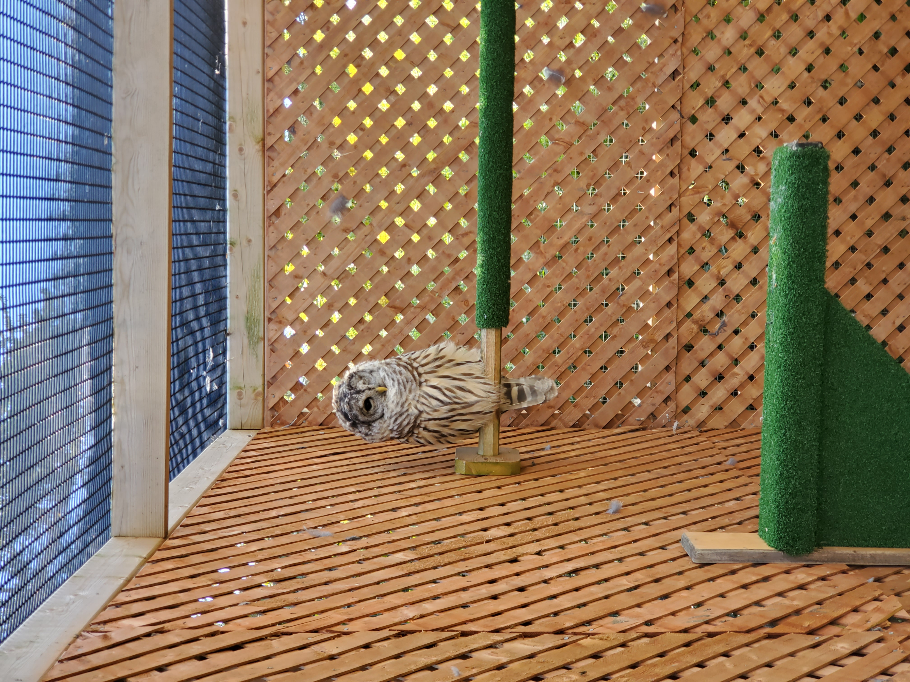

IT Systems Management & Security Student | Photographer | Musician
Hope for Wildlife is a local nonprofit devoted towards rehabilitation and conservation of wild animals. Since 1997, they have rescued over 80,000 injured animals from over 250 species. They are also a centre for education on the wild species of Nova Scotia, raising awareness and sharing knowledge of the animals they rehabilitate. Their organization can be supported at hopeforwildlife.net
Picture of a One-eyed Barred Owl taken at Hope for Wildlife